Meet the Officers
Alex Li:
Co-President
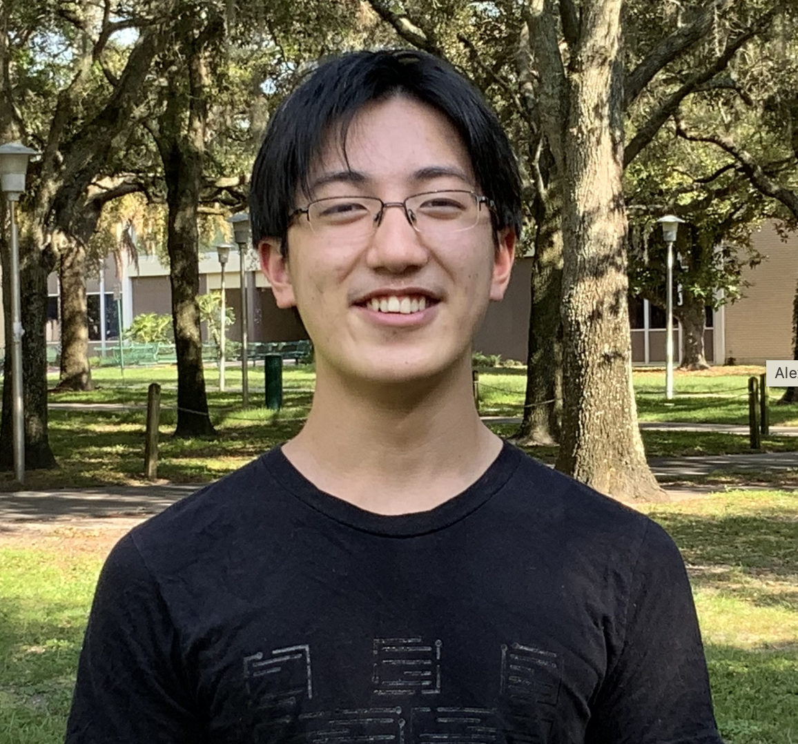
Alexander Li is a junior at King High School. He began competing through AMC 8, and later Mathcounts in middle school, joining FLSAM in 7th grade. His favorite topic is Mu Alpha Theta problems. When he is doing math, Alex likes working through contest problems, writing his own problems, and reading books. When he is not doing math, Alex may be found studying physics or sleeping.
Karthik Vedula:
Co-President

Karthik Vedula is a senior at James S. Rickards High School. He started going to math competitions in 3rd grade, and ever since then his interest in math has only grown. He discovered FLSAM in 6th grade and got exposed to even more difficult and intriguing questions in competitions such as PUMaC and CMIMC. His favorite part of math is meeting the many new, diverse, interesting, and funny people during math competitions. Other than that, he really enjoys solving and creating geometry questions, as well as eating them for breakfast, lunch, and dinner. In his spare time, besides eating geometry questions, one can find him eating real food, playing minesweeper, or playing Wii tennis.
Rosa Wu:
Co-Vice President
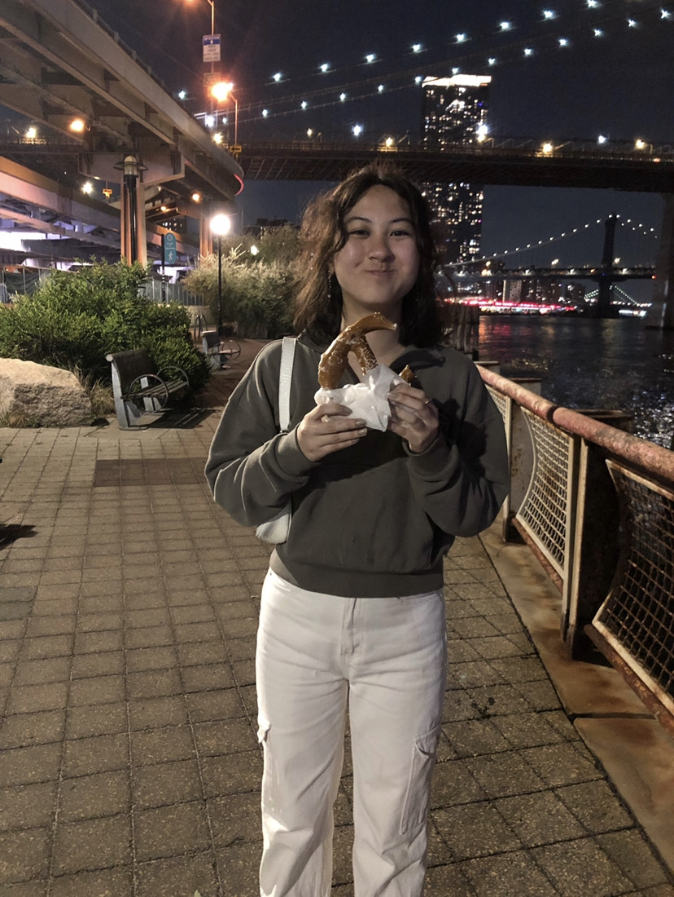
Rosa Wu is a senior at American Heritage School - Broward. She attended her first math competition in 4th grade and was introduced to FLSAM freshman year. Her favorite math subject is geometry while conics make her head hurt. Besides math, she enjoys sleeping, her pet goats, and burning things in the oven. She loves meeting people and is really looking forward to this year!
Sharvaa Selvan:
Co-Vice President
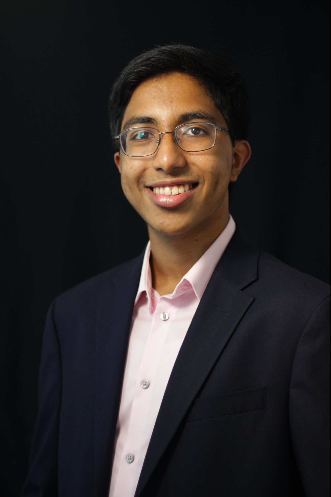
Sharvaa Selvan is a senior at American Heritage Broward. His passion for math began in 2nd grade when he started to compete in various regional and national math competitions. He has participated in USAJMO, HMMT, CMIMC, FAMAT, and many other contests throughout the years. Outside math he enjoys playing the guitar, debating, and learning chemistry. He is excited to be a part of FLSAM!
Aaron Hu:
Curriculum Committee Chair
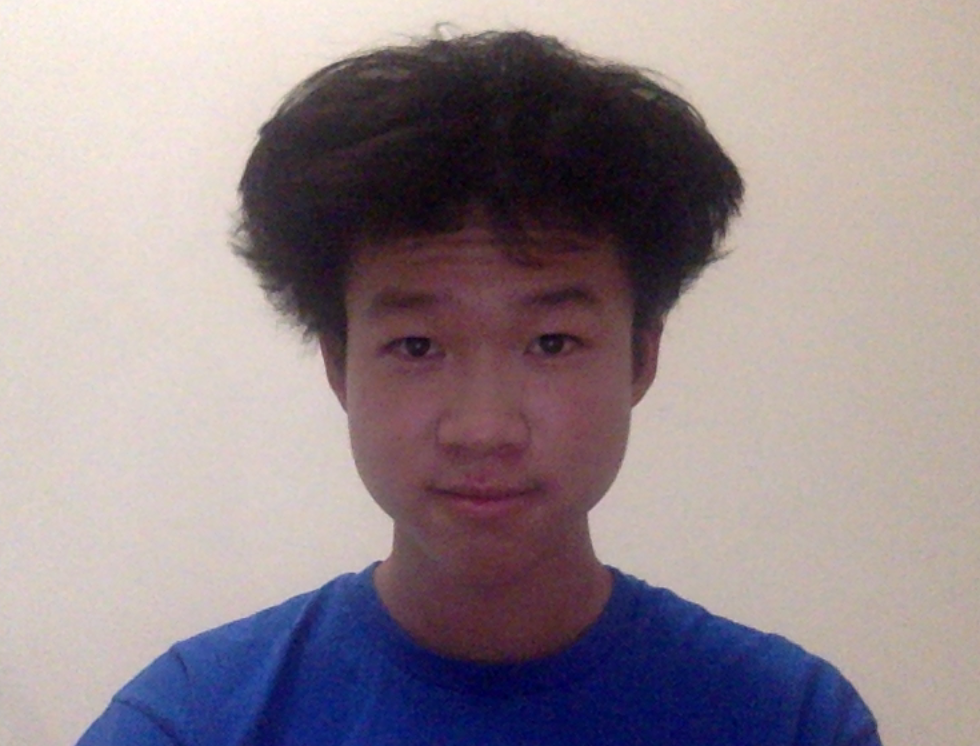
Aaron Hu is a junior at Lawton Chiles High School. He began competing in Mathcounts in sixth grade and since then has participated in FAMAT and the AMC series. He joined FLSAM in seventh grade and has enjoyed the various competitions they attend. His favorite part of math is geometry. Besides doing math, he spends his time playing tennis, watching basketball, and playing video games.
Aaryan Vaishya:
Webmaster
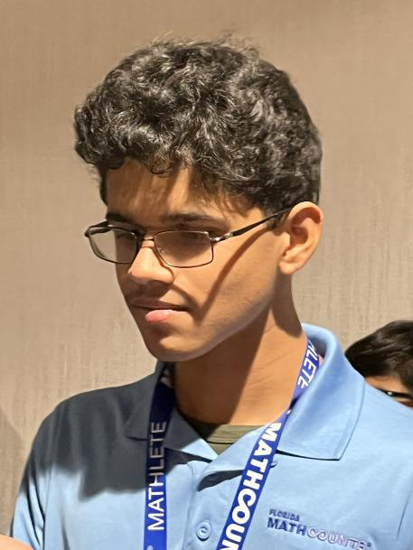
Aaryan Vaishya is a freshman at Middleton High School. His favorite part of math is combinatorics, and he enjoys hating on geometry despite liking it as well. His interests include almost everything he's come across, with the exception of golf. Aside from trying to get better at life, he enjoys playing Hypixel with the boys and trolling geometers.
Jessica Wan:
Curriculum Committee
Jessica is a high school junior who's enjoyed contest math (especially combinatorics) since elementary school. She's a three-time MOPper, two-time EGMO gold medalist, and USAMO silver medalist. After joining FLSAM in 9th grade, she competed with the team at HMMT and PUMaC. Outside of math, she enjoys various forms of art and puzzles.
Andrew Xing:
Region 2 Coordinator
Curriculum Committee

Andrew Xing is currently a sophomore at Buchholz High School. He started competitive math in 4th grade, and has participated in various national and statewide events, including FAMAT, AMC, and Mathcounts. He joined FLSAM in eight grade, and has enjoyed participating in the multiple competitions they hold. His favorite subject in math is geometry, and he has a lot of fun teaching others. Some of his favorite pastimes outside of math include contemplating his life choices, attempting to expand his interests, and playing video games.
Anagh Sangvarapu:
Curriculum Committee

Anagh Sangavarapu is a senior at American Heritage School. He began competing in mathematics in 6th grade with the AMC8 and has since participated in various competitions including FAMAT and the AMC series. He became a member of FLSAM in 9th grade and discovered competitions like ARML as a result. He loves all kinds of math... excluding number theory. When not doing math himself, Anagh can be found helping other people learn math, watching or playing a sport, attempting to cook, watching non-sport TV (rare), or maybe even sleeping (more rare).
Yuhan Niu:
Curriculum Committee

Yuhan Niu is a junior at American Heritage School Palm Beach. He started participating in math competitions through FAMAT in 5th grade, before gradually moving into Mathcounts and AMC in middle school. He enjoys discussion with others on whatever various topics that come to mind. These topics generally fall into the categories of science, geography, history, and sports, but they are definitely not limited to them. He is focused on improving in physics and math olympiads, both conceptually and methodically. Yuhan has the philosophy that whatever there is to learn, it can all be learned with enough time.
Tom Zhang:
Curriculum Committee
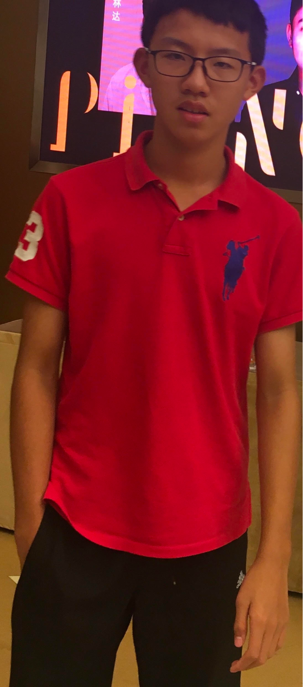
I am a junior at American Heritage School. I started my AMC/AIME series from 9th grade and I found out FLSAM in 9th grade as well, I have participated ARML twice. My favorite part in math is geometry while combo is impossible for me. Besides doing math, I love playing soccer, ping pong and listening to Spotify.
Rui Jiang:
Region 4b Coordinator
Curriculum Committee

My name is Rui Jiang and I’m a sophomore at Pine View School. I have been doing math competitions since I started taking the AMC 8 in 6 th grade. Since then, I have participated in other math competitions such as USAJMO, Mathcounts, and ARML. I joined FLSAM in 9th grade and have been able to explore more math competitions. Outside of math, I like to play chess, tennis, and video games.
Xuzhou Ren:
Curriculum Committee
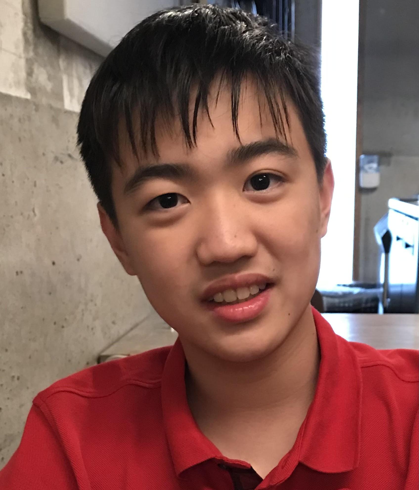
My name is Xuzhou Ren, but my friends call me Tiger. I’m a sophomore at American Heritage Broward. My favorite topics in math are geometry and combo. Outside of math, I play piano and write about food. I also enjoy swimming and losing money on stocks.
Ahan Mishra:
Curriculum Committee

Ahan Mishra is a senior at Buchholz High School. He started out in math with the AMC in 6th grade and has since competed in AIME, ARML, Math League, and FAMAT. He joined FLSAM in 10th grade, especially enjoying the FLOMO. His favorite area of math is algebra, or really anything that is not geometry. Outside of math, Ahan enjoys doing science, especially physics and Science Bowl. He also plays chess in his free time.
Sailalitha Kodukula:
Curriculum Committee
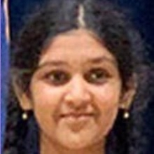
Sailalitha Kodukula is a sophomore at American Heritage School. She has been competing in competitions such as the AMC 8 and AMC 10 since middle school. Since then, she has developed a passion for mathematics and has participated in other completions such as AIME, FAMAT, MATHCOUNTS, ARML, and CMIMC. In her free time, she enjoys listening to music, singing, and programming.
Jialai She:
Region 1 Coordinator
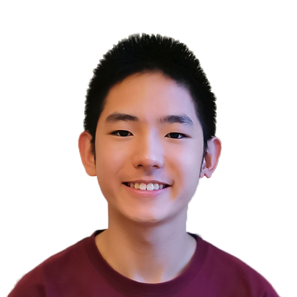
Jialai She is a freshman at Lawton Chiles High School. As a 3rd grader, he started attending math competitions. He soon found his love for math and his interest has only increased. He discovered FLSAM in 7th grade, and got to compete in many national competitions such as ARML, CMIMC, and PUMaC. He enjoys making social connections to people at different math competitions, and always enjoys a good chat. Besides practicing calculus and researching interesting topics, one can find him playing the guitar, or out on a nature walk.
Amrit Vignesh:
Region 3 Coordinator

Amrit Vignesh is an IB junior in Seminole High in Sanford, Florida. He has been competing in various math competitions since 5th grade, including MathLeague, FAMAT, MathCounts, and AMC. He would like to pursue a major in material science & engineering, possibly doubling it up with a pure math major, reflecting his interest in math and related STEM fields. In his free time, he watches a various amount of sports, such as soccer, football, basketball, cricket, F1, and tennis.
Vignesh Saravanan:
Region 4a Coordinator
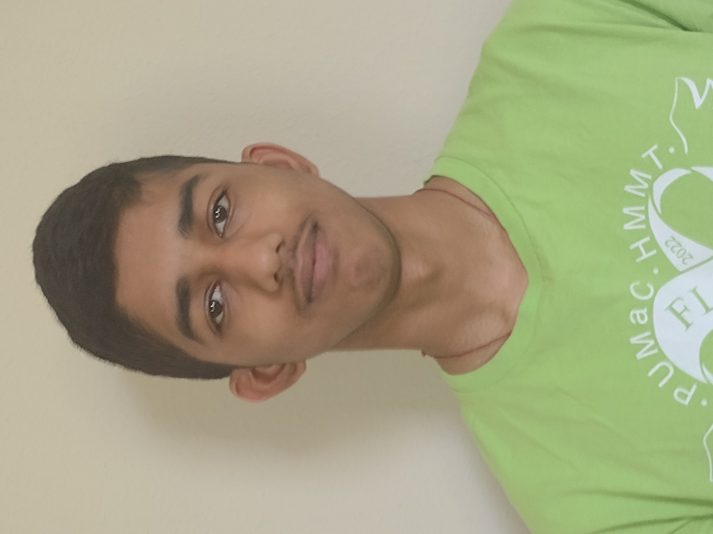
Vignesh Saravanan is a junior at King High School. He began participating in math competitions in 6th grade with Mathcounts and the AMC series later on. He joined FLSAM in 10th grade. His favorite topic in math is combinatorics. Aside from doing math, he also enjoys watching movies, sleeping, and learning science.
Srijan Deoraj:
Region 5a Coordinator
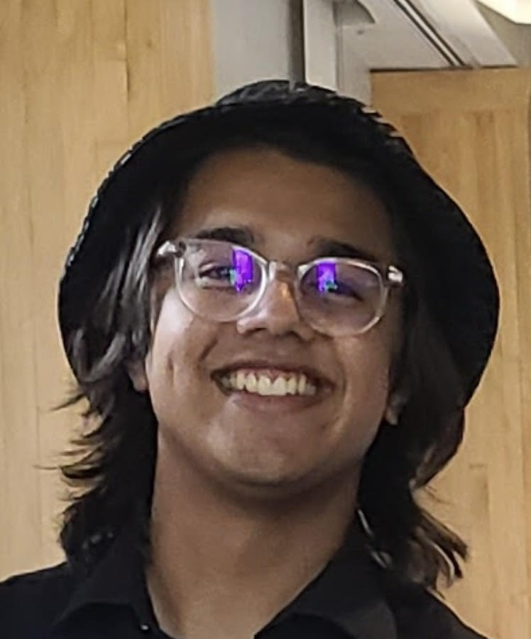
Srijan Deoraj is a senior at American Heritage Broward. He has been involved in math competitions since 4th grade, but he began competing in FLSAM competitions in 9th grade. His favorite part about math is probably seeing all of the interesting applications to everyday life in subjects like Physics, Chemistry, or Computer Science. Besides math he also enjoys playing the piano or basketball with his friends.
Nicholas Diaz:
Region 5b Coordinator

Nicholas Diaz is a freshman at Doral Academy High. Nicholas began attending math competitions in the 5th grade and has competed in AMC, Mathcounts,FAMAT, FML, and many other tests. When not grinding AMC 10 tests Nicholas enjoys losing money on meme stocks, making mock tests, and playing table tennis with friends and family.
Ramez Ortiz:
Region 5c Coordinator
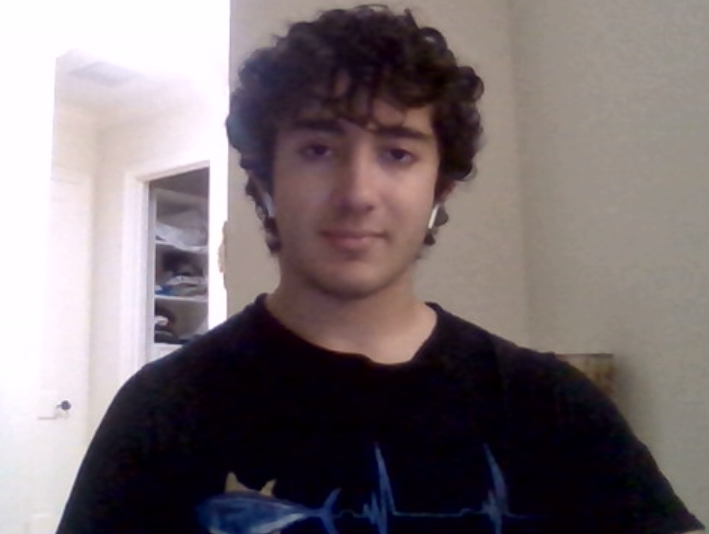
Ramez Ortiz is a junior at American Heritage Palm Beach. He began his journey with competition math in 6th grade and has enjoyed doing competitions like Mathcounts, FAMAT, and the AMC series ever since. He has been a part of FLSAM since 8th grade and his favorite subject in math is combinatorics. Aside from math, he also likes playing bedwars, fishing, eating, and sleeping.